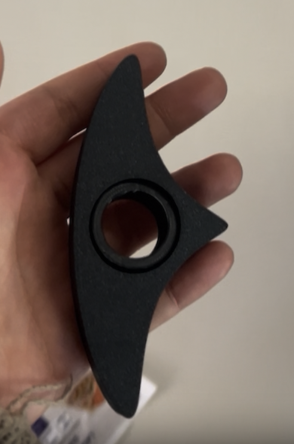
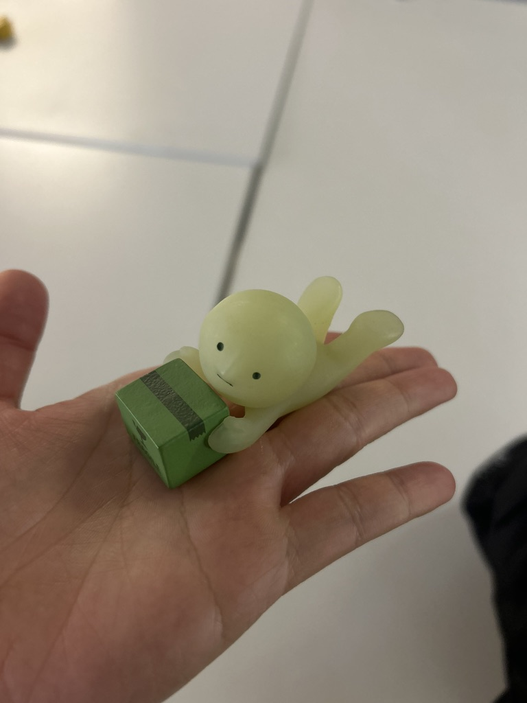
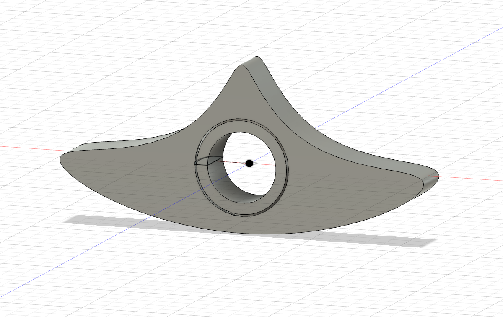
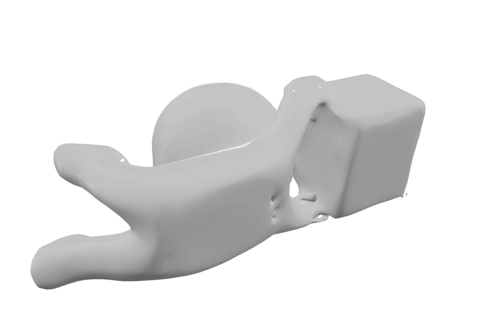

<div class="textcontainer">
<p class="margin"> </p>
<h3>Week 5: 3D Design & Printing</h3>
<p class="margin"> </p>
<p></p></img>
<p></p></img>
<p class="margin"> </p>
<h4>The Assignment</h4>
<p>This week’s focus was on 3D printing and scanning. The primary challenge was to design and print an object that could not be easily made using subtractive methods (like CNC milling or manual carving). For that, I tackled the design of a fidget spinner book holder and made a 3D scan of a smiski. I also explored 3D scanning and updated the progress on my final project.</p>
<p class="margin"> </p>
<h4>3D Print: Fidget Spinning Thumb Book Holder</h4>
<p>I am an avid reader, but I also love a good fidget toy! I have seen a lot of fidget toys around, and I've been meaning to make a book holder ever since I learned that laser cutting was a thing, so I decided to combine it so that it was non-subtractive and personal to me! While a standard page holder is a static piece of wood or plastic, mine features an captive, integrated spinning ring in the center that can rotate a full 360 degrees.</p>
<p class="margin"> </p>
<h4>Design Process in Fusion 360</h4>
<p>The biggest hurdle was the geometry of the spinning mechanism. Initially, I just had a simple circle, but it wouldn't stay in place or spin smoothly. With some help from Bobby, I learned how to use the <b>Revolve</b> and <b>Hole/Carve</b> tools to create a spherical void. THANK YOU BOBBY! A theme to come for many days ahead...what would we do without the teaching team?</p>
<ul>
<li><b>Track Creation:</b> I made an inner spherical cut to create a track. By making the inner ring slightly curved (convex) and the housing slightly concave, the ring is physically locked in place but has enough clearance to spin freely.</li>
<li><b>Clearance:</b> I had to leave a small gap (approx 0.3mm) between the ring and the holder so the 3D printer wouldn't fuse them together.</li>
</ul>
<p></p>
<h5>3D Model</h5>
<iframe src="https://a360.co/4dmWaMa" width="640" height="480" allowfullscreen="true" frameborder="0"></iframe>
<p class="margin"> </p>
<h4>3D Scanning</h4>
<p>For the scanning portion of the assignment, I used the camera that we saw during lab to make the 3D scan in the box near the front of the room. The process involved taking about many photos from different angles as I slowly spun the plate. The resulting mesh was surprisingly detailed, though it required some cleaning up in Meshmixer to close the holes at the bottom.</p>
<p></p>
<p class="margin"> </p>
<div class="flexrow">
<a id="btn" href="ellie_smiski_mesh.ply" download>Download the 3D scan of the smiski!
</a>
</div>
<p class="margin"> </p>
<h4>Final Project Update</h4>
<p>I have refined the vision for my final project. Below is the current 3D mockup and the projected path forward.</p>
<h5>3D Model</h5>
<iframe src="https://a360.co/4dmWaMa" width="640" height="480" allowfullscreen="true" frameborder="0"></iframe>
<h5>Bill of Materials (Preliminary)</h5>
<table class="table">
<thead>
<tr>
<th>Component</th>
<th>Quantity</th>
<th>Source</th>
</tr>
</thead>
<tbody>
<tr>
<td>XIAO ESP32-C3</td>
<td>1</td>
<td>Lab</td>
</tr>
<tr>
<td>Speaker</td>
<td>1</td>
<td>Lab</td>
</tr>
<tr>
<td>3D Printed Housing</td>
<td>1</td>
<td>3D print</td>
</tr>
<tr>
<td>LED screen</td>
<td>1</td>
<td>Lab</td>
</tr>
<tr>
<td>Buttons</td>
<td>6</td>
<td>Lab</td>
</tr>
<tr>
<td>SD card reader</td>
<td>1</td>
<td>Lab</td>
</tr>
<tr>
<td>RFID reader</td>
<td>1</td>
<td>Lab</td>
</tr>
<tr>
<td>RFID Cards</td>
<td>5</td>
<td>Lab</td>
</tr>
</tbody>
</table>
<h5>Timeline</h5>
<ul>
<li><b>Week 7:</b> Get all different systems to interact and play sound after scanning a card</li>
<li><b>Week 9:</b> Solder everything onto a solderable board and test functionality</li>
<li><b>Week 11:</b> Code optimization and polishing the UI.</li>
</ul>
<p class="margin"> </p>
<h4>Reflections</h4>
<p>I’m really proud of the spinning ring! It was my first time designing something with moving parts that print as a single piece. In the future, I’d love to personalize it further by embossing my name or small floral patterns onto the "wings" of the book holder. I am also NEVER doing a 3D scan again--that was so hard and time consuming. I think Tolu (+ Bobby on Facetime) was the only reason I got it done.</p>
</div>